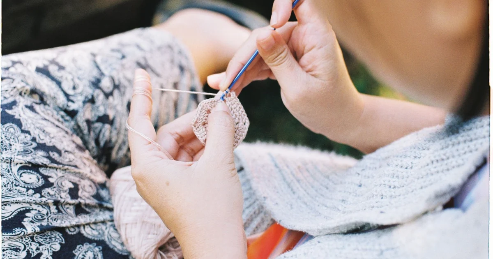
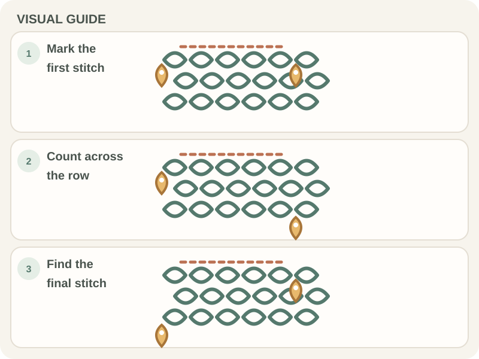

Crochet Basics · Beginner guide
How to Keep Crochet Edges Straight as a Beginner
Keep row edges even by tracking the first and last stitch and following the turning-chain rule.

A piece that widens or narrows often has an edge-count issue. Middle stitches can be consistent while one edge stitch is missed or worked twice.
Before you begin
Use a pattern with a stated row count and mark the first or last stitch if it is hard to see. Confirm whether the turning chain counts.
Step-by-step instructions
- At the end of a row, count completed stitches and compare the total with the pattern.
- Locate the first stitch beneath or beside the turning chain, following the pattern’s rule.
- Work into each stitch once, keeping the fabric relaxed so the top V stays visible.
- At the far edge, check whether the pattern calls for a stitch in the turning chain; do not add one automatically.

What to check
Track the stitch count at the edges
Count after every few rows. If the count is steady but the edges slope, compare your edge and turning-chain technique with the pattern instructions.
Frequently asked questions
Why does my row gain stitches?
You may be working into a turning chain the pattern does not count, or making two stitches in one edge stitch.
Can stitch markers help?
Yes. Marking an edge stitch makes it easier to find in dense fabric or while learning.
Why is one edge stepped if my count is right?
The turning chain may be handled differently at the edge, or the first and last stitches may sit at different heights. Compare the row instructions before changing tension.
Tell a stitch-count problem from a tension change
Count the row before adjusting your yarn tension. If stitches are being added or missed, the number will change; if the count matches but the fabric slants or cups, compare stitch height and yarn tension across the row. A turning chain can also make an edge look taller than the stitches beside it. These clues point to different causes, so pulling the fabric wider or changing hook size before checking the count can make the real issue harder to find.
Inspect one edge at a time
At the start of the row, identify the first stitch from the pattern and mark it if needed. Work across, then locate the last stitch using the same pattern rule. Count the completed stitch tops and compare them with the row total. If the count is wrong, compare this row with the last one that had the expected total and find the first edge where the two differ. Undo only to that point and correct the missed or added stitch. Keep notes when the pattern changes stitch height or begins a shaping section, because those transitions can change how the edge looks without changing the stated count.
Check the edge before changing your hook
A hook-size change can alter the fabric’s width and drape, but it will not restore a stitch that was skipped or added. First count the row and verify the turning-chain rule. If the count matches, compare the height of stitches at both edges and look for a chain that is looser or tighter than the row. A small difference may come from how the turning chain is worked; a steady diagonal can also come from uneven tension. Make a short swatch with the same stitch and edge instructions before changing the hook for a larger project, especially when its finished dimensions matter.
Common mistakes and how to fix them
- Working into a non-counting turning chain. This can add a stitch. Check the pattern’s rule and mark the true first stitch.
- Missing the first stitch beside the turning chain. The edge may lose one stitch on each row. Use a marker until the stitch is easy to identify.
- Pulling the sides to straighten them. Stretching can disguise a count problem and distort the fabric. Count the row and locate where the total first changed.
Tips that make it easier
- Move a removable marker up into the first or last stitch after each row.
- Lay the piece flat without stretching it before comparing the two sides.
- Check after a few rows so a small edge error is easier to find and undo.
A practical next step
Move a removable marker up into the first or last stitch after each row. Then check your result against the pattern before continuing.